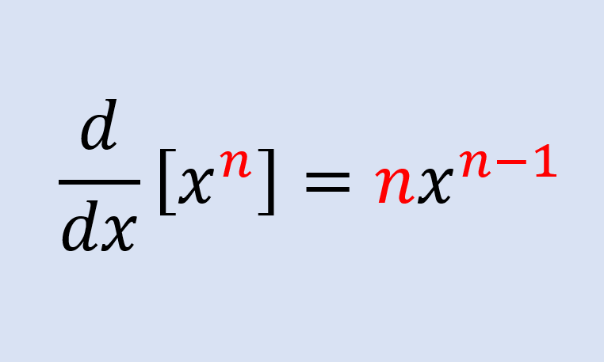
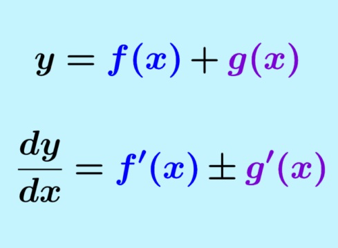
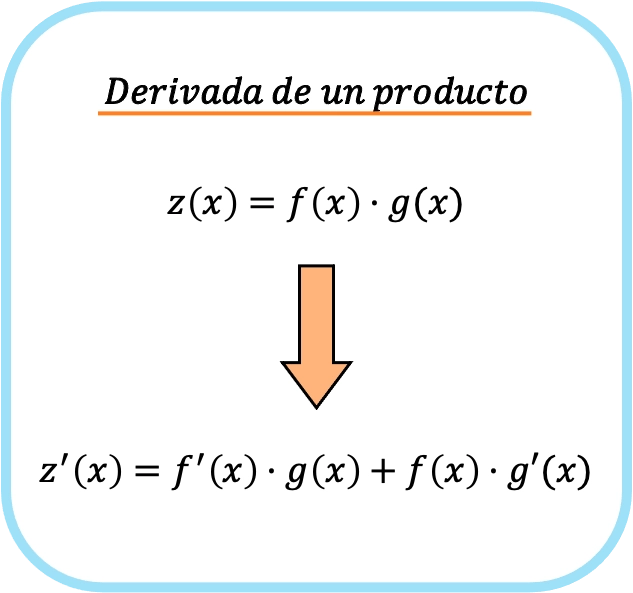
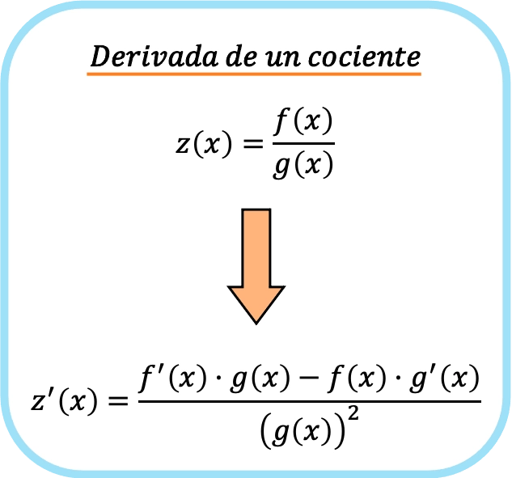

-
Regla de la constante:
Si c es una constante:
d/dx (c) = 0 -
Regla de la potencia:
Si f(x) = xⁿ, donde n es un número real:
d/dx (xⁿ) = n · xⁿ⁻¹

-
Regla de la suma y la resta:
d/dx (f(x) ± g(x)) = f'(x) ± g'(x)

-
Regla del producto:
d/dx (f(x) · g(x)) = f'(x) · g(x) + f(x) · g'(x)

-
Regla del cociente:
d/dx (f(x)/g(x)) = [f'(x) · g(x) − f(x) · g'(x)] / [g(x)]²

-
Regla de la cadena:
Si y = f(g(x)), entonces:
dy/dx = f'(g(x)) · g'(x)
Las reglas de derivación permiten calcular la derivada de funciones sin tener que usar la definición del límite cada vez. Estas son las más comunes: